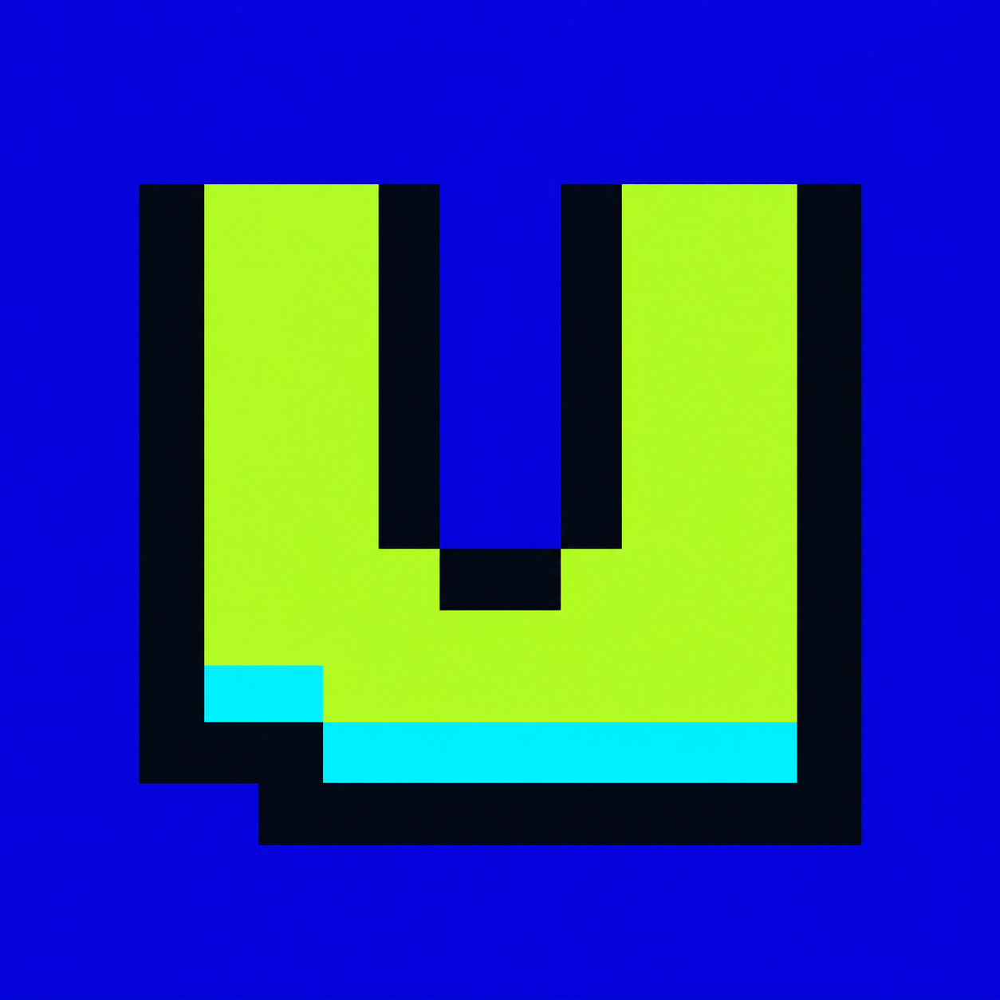
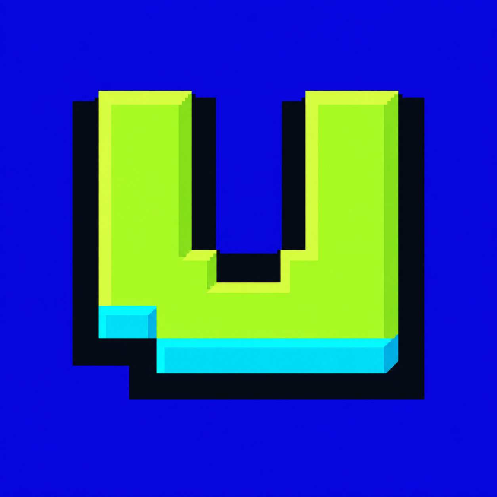
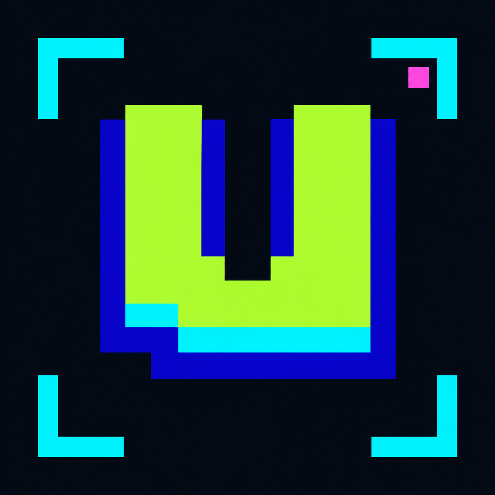
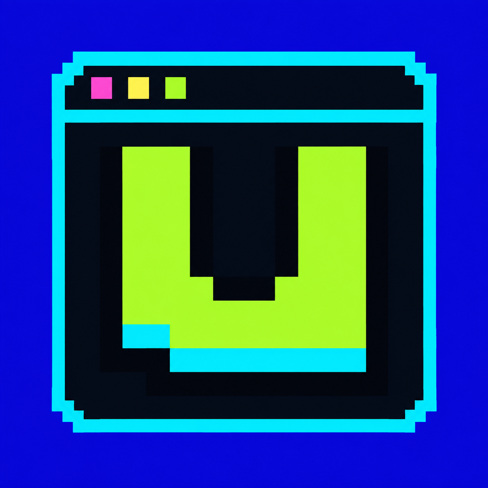
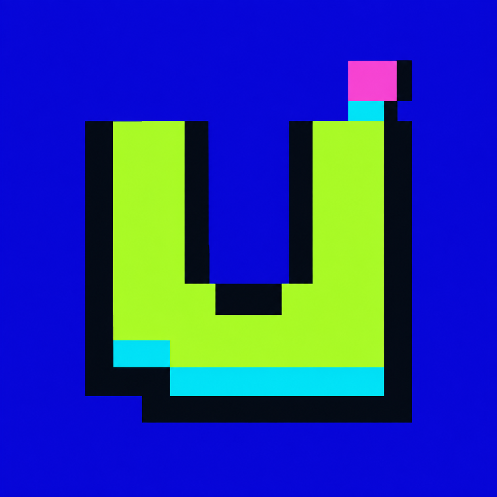

01
BBS Classic
The closest to the canonical pixel mark.
32
48
64
32
48
64
Generated concepts for iOS and macOS, with rounded-mask previews and actual-size comparisons on light and dark backgrounds.

The closest to the canonical pixel mark.

Subtle layered depth, with the same stepped silhouette.

A dark field with bright ANSI corner accents.

The u inside a minimal browser window.

One lifted pixel suggests a customizable app.